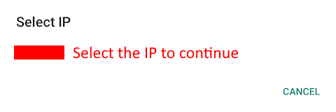
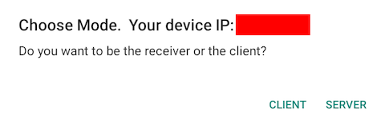
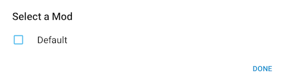
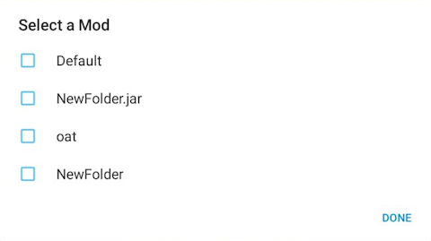
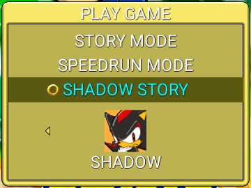
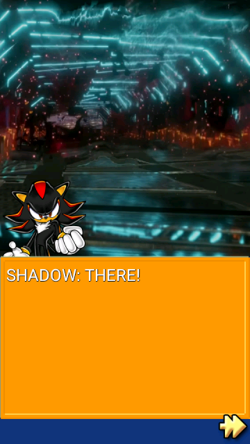
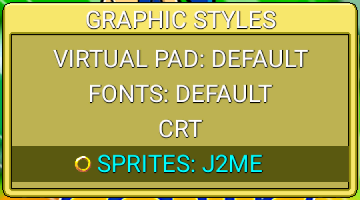
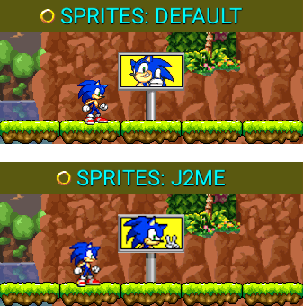

Hidden Features
Introduction
Sonic Jump Revival contains hidden features that can only be accessible via the main cheat.
After using the main cheat, additional options highlighted in cyan are available in certain menus.
This page explains all the hidden features and why they are hidden.
To use the main cheat, check the Cheat Codes menu for more information.
Multiplayer Mode
Description
The Multiplayer Mode is a game mode where 2 players are playing together for casual or competitive purposes.
One player is playing as Sonic, whereas the other player is playing as Shadow. In Multiplayer Mode, Shadow has the same physics as Sonic so both players has the same advantages.
How to start Multiplayer Mode
The Multiplayer Mode functions via local connection. Make sure that both player's device are connected to the same Wi-fi.

After activating the cheat, select MULTIPLAYER in the Main Menu and a window appears.
Select your device IP to continue.

Next, the game asks if you want to be the receiver or the client.
If you want to be the client, select CLIENT and insert the other player's device IP.
If you want to be the receiver, select SERVER and wait for the other player to insert you device IP.

Finally, once done correctly, select a game mode and the other player's screen will appear on the top-left corner of your screen.
Why is it hidden?
The Multiplayer Mode was originally going to be one of the new features highlighted in Sonic Jump Anniversary (v2.0.0), but it was decided to make it hidden as a secret feature, due to the problematic structure of the multiplayer screens.
If you want to work on this project, check out the Multiplayer Mode project.
Mod Loader
Description

The Mod Loader is a feature that allows players to load their mods directly into the game.
Once a mod is selected, the game restarts with the modified codes of the mod.
How to use the Mod Loader
First, you need a config.ini file and a config folder containing your modified Java files from the game's source code.
Then, put both the .ini file and folder in another folder with the name of your choice and put this folder in a .zip file.
After the .zip file is made, put it in the Android/media /io.github.sonicmobirev.sonicjumprevival /SonicJump/mods directory.
Once done correctly, you can find the name of your .zip file in the Mod Loader.
Select it and press DONE.
The game will restart with the modified codes of your mod.

As a sidenote, after trying to use your mod from the Mod Loader, more files are created in the "mods" folder and can be seen in the Mod Loader.
Why is it hidden?
The Mod Loader is an idea made by GdGohan.
While this idea is interesting, is it very complicated to make it work correctly.
The Mod Loader was originally planned to be on the spotlight with the other new additions of Sonic Jump Revival.
But because it doesn't work, it was decided to make it hidden as a secret feature.
If the Mod Loader will work correctly one day, it will be accessible without the need of the main cheat.
Shadow Story
Description

In the PLAY GAME menu is a hidden game mode named SHADOW STORY.
This mode lets you play the game with a new story and different stage environments.
To better experience this game mode, make sure to select SHADOW before entering the SHADOW STORY mode.
New cutscene

If you play the SHADOW STORY mode as Shadow, the first stage grants you with a brand-new cutscene inspired by the story from Sonic X Shadow Generations.
"COLONY ARK" ZONE

Additionally, Green Hill Zone Act 1 will have a different stage environment resembling Colony ARK.
Why is it hidden?
The reason for this game mode being hidden is because it is currently unfinished.
Only the first stage has differences between the main game and SHADOW STORY mode.
And even then, the level layout is the same.
The SHADOW STORY mode is an idea made by GdGohan.
If he decides to keep working on this project, maybe this story will available from the start.
However, this project isn't a big priority at the moment.
J2ME sprites
Description

In the GRAPHIC STYLES menu is a hidden option named SPRITES.
You can choose between DEFAULT and J2ME.

If you choose the J2ME sprites, some sprites will look more like the ones from the AirPlay version of Sonic Jump running on 240x320 cellphones.
Why is it hidden?
This option was originally designed only for Sonic and Shadow and was an already available option in Sonic Jump Anniversary (v2.0.0).
However, when new playable characters were added, it is more complicated to implement new character sprites outside of the original sprite sheet (originally used only for Sonic).
Because Sonic Jump Revival uses a new method of invoking character sprites, this creates compatibility issues.
Also, not all sprites are affected by the sprite change, so this feature is unfinished.
Because of those reasons, it was decided to make it hidden as a secret option.